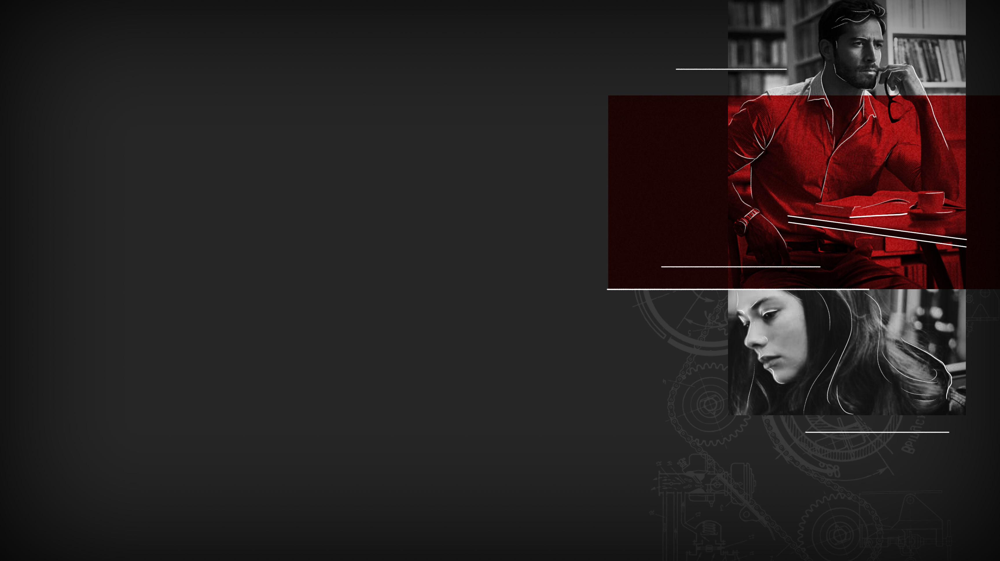

SPLITTED
SPLITTED

The bell rings, and although we are caught up in the discussion, its sound sets off our basic needs for freedom after a long morning of school.
«Class is dismissed. Please guys, remember your final paper on the great migration, I won't accept delays on the delivery!»
My classmates pass me by as I collect my stuff. When everyone is out of the room I walk up to professor Hudson, holding the device in my hands.
«Ah - he utters when he sees it - you brought the relic!»
I hand it out to him, and he looks at it with curious eyes and careful hands.